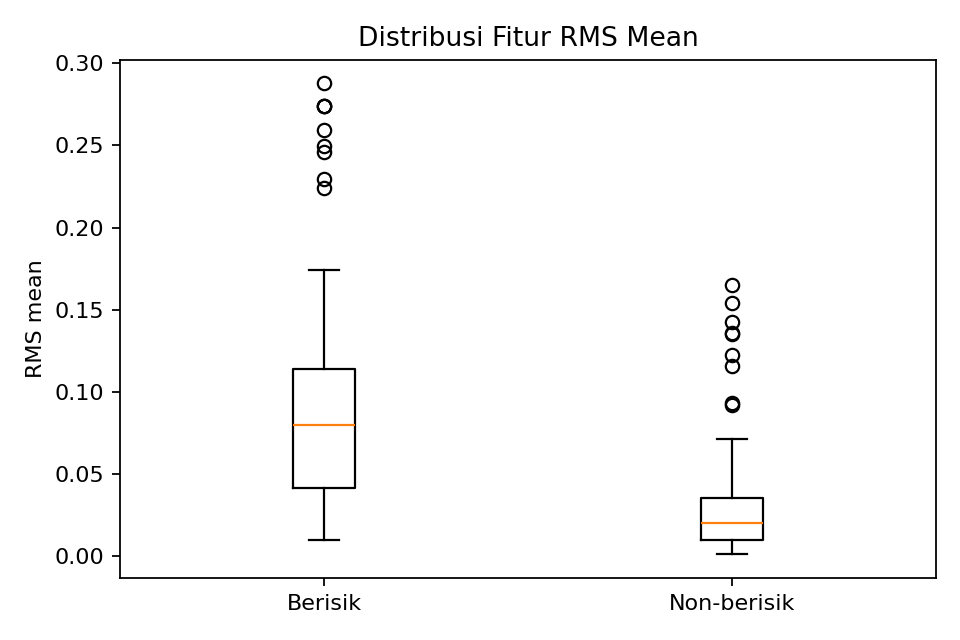

Feature Extraction — Ekstraksi Fitur dari Sinyal Audio#
Tahap Feature Extraction mengubah gelombang sinyal audio digital satu dimensi yang memiliki panjang bervariasi menjadi representasi vektor numerik berdimensi tetap (feature vector) yang dapat diproses oleh algoritma pembelajaran mesin tabular.
5.1 Rincian 32 Fitur Akustik#
Setiap berkas audio yang telah distandardisasi diekstraksi menjadi tepat 32 fitur numerik menggunakan pustaka Librosa [MLM+20]. Fitur-fitur ini mengacu pada silabus perkuliahan [TimDPSData24] dan mencakup empat kelompok representasi akustik:
Kelompok Fitur |
Deskripsi Matematis & Akustik |
Agregasi Statistik |
Jumlah Fitur |
|---|---|---|---|
Root Mean Square (RMS) |
Mengukur magnitudo energi atau daya efektif rata-rata dari gelombang sinyal audio. Suara berisik umumnya memiliki nilai rata-rata RMS yang jauh lebih tinggi dibandingkan suara tenang. |
Mean dan Standard Deviation |
2 |
Spectral Centroid |
Menunjukkan titik pusat massa (frekuensi berbobot) dari spektrum daya sinyal. Sering diasosiasikan dengan tingkat kecerahan (brightness) atau ketajaman suara. |
Mean dan Standard Deviation |
2 |
Zero-Crossing Rate (ZCR) |
Menghitung laju perubahan tanda amplitudo sinyal yang melintasi sumbu nol per detik. ZCR tinggi mengindikasikan keberadaan komponen derau berfrekuensi tinggi (high-frequency noise) atau desis. |
Mean dan Standard Deviation |
2 |
Mel-Frequency Cepstral Coefficients (MFCC 1–13) |
Tiga belas koefisien cepstral yang memetakan spektrum daya ke dalam skala Mel non-linear sesuai karakteristik respons koklea telinga manusia. |
Mean dan Standard Deviation untuk masing-masing koefisien 1–13 |
26 |
Total Vektor Fitur |
32 |
Catatan Klarifikasi: Pada dokumen materi kuliah awal, terdapat penyebutan angka 40 fitur pada contoh data dummy. Namun, implementasi teknis dan fungsi ekstraksi resmi yang disepakati dan diuji menghasilkan tepat 32 fitur numerik.
Daftar nama fitur selengkapnya adalah sebagai berikut:
rms_mean,rms_stdspectral_centroid_mean,spectral_centroid_stdzcr_mean,zcr_stdKoefisien mean:
mfcc_01_meanhinggamfcc_13_mean(13 fitur)Koefisien std:
mfcc_01_stdhinggamfcc_13_std(13 fitur)
5.2 Analisis Distribusi Fitur RMS#
Fitur energi RMS merupakan salah satu pembeda paling kuat antara audio berisik dan non-berisik. Grafik distribusi nilai rata-rata RMS (mean RMS) pada dataset disajikan pada gambar berikut:


Fig. 4 Distribusi nilai rata-rata RMS (mean RMS) antara kategori berisik dan non-berisik. Kategori berisik memiliki kecenderungan nilai energi yang jauh lebih tinggi dan menyebar.#
Kendati nilai energi RMS memberikan kontribusi separasi yang signifikan, terdapat area tumpang-tindih (overlap) pada tingkat energi menengah (misalnya suara bisikan keras atau desis mesin halus). Oleh karena itu, pengklasifikasian tidak dapat hanya mengandalkan fitur tunggal RMS, melainkan membutuhkan kombinasi dari keseluruhan 32 fitur akustik dalam ruang multidimensi.
5.3 Implementasi Kode Ekstraksi Fitur (src/audio_features.py)#
Kutipan kode statis berikut diambil langsung dari modul src/audio_features.py sebagai implementasi baku ekstraksi data:
"""Reusable preprocessing and 32-feature extraction for PSD audio classifier.
Feature definition follows the course HackMD: RMS (mean/std), spectral centroid
(mean/std), zero-crossing rate (mean/std), and MFCC 1..13 (mean/std).
Input audio is decoded to mono 16 kHz. Silence is retained intentionally because
background silence/noise may be informative for the berisik/non-berisik task.
"""
from __future__ import annotations
import io
import subprocess
from pathlib import Path
from typing import Iterable
import librosa
import numpy as np
import soundfile as sf
SAMPLE_RATE = 16_000
N_MFCC = 13
FEATURE_NAMES = [
"rms_mean", "rms_std",
"spectral_centroid_mean", "spectral_centroid_std",
"zcr_mean", "zcr_std",
] + [f"mfcc_{i:02d}_mean" for i in range(1, N_MFCC + 1)] + [
f"mfcc_{i:02d}_std" for i in range(1, N_MFCC + 1)
]
assert len(FEATURE_NAMES) == 32
def load_audio(path: str | Path, sr: int = SAMPLE_RATE) -> tuple[np.ndarray, int]:
"""Load any FFmpeg-readable audio path as mono float audio at the target SR.
Librosa is attempted first. If the file is mislabeled or an AAC-in-MP3 wrapper
is not accepted by the active decoder, FFmpeg is used as a fallback.
"""
path = str(path)
first_error: Exception | None = None
try:
y, actual_sr = librosa.load(path, sr=sr, mono=True)
if y is not None and len(y):
y = np.asarray(y, dtype=np.float32)
if not np.isfinite(y).all():
raise ValueError("Audio contains NaN or infinite samples")
return y, sr
raise ValueError("Empty audio signal")
except Exception as exc: # try robust decoder below
first_error = exc
command = [
"ffmpeg", "-nostdin", "-v", "error", "-i", path,
"-f", "wav", "-acodec", "pcm_s16le", "-ac", "1", "-ar", str(sr), "pipe:1"
]
try:
result = subprocess.run(command, check=True, capture_output=True, timeout=120)
y, actual_sr = sf.read(io.BytesIO(result.stdout), dtype="float32", always_2d=False)
if y is None or len(y) == 0:
raise ValueError("FFmpeg returned empty audio")
if y.ndim == 2:
y = y.mean(axis=1)
if actual_sr != sr:
y = librosa.resample(y.astype(np.float32), orig_sr=actual_sr, target_sr=sr)
y = np.asarray(y, dtype=np.float32)
if not np.isfinite(y).all():
raise ValueError("Decoded audio contains NaN or infinite samples")
return y, sr
except Exception as fallback_error:
raise RuntimeError(
f"Tidak dapat membaca audio '{Path(path).name}'. "
f"Librosa: {first_error}; FFmpeg fallback: {fallback_error}. "
"Pastikan file audio valid dan FFmpeg terpasang."
) from fallback_error
def extract_feature_vector(y: np.ndarray, sr: int = SAMPLE_RATE) -> np.ndarray:
"""Convert a waveform to one finite vector with exactly 32 numeric features."""
y = np.asarray(y, dtype=np.float32).reshape(-1)
if y.size == 0:
raise ValueError("Audio kosong")
if not np.isfinite(y).all():
raise ValueError("Audio mengandung nilai non-finite")
# RMS, centroid and ZCR use the whole recording. We intentionally do not
# remove silent frames so the model can learn relevant background context.
rms = librosa.feature.rms(y=y)[0]
centroid = librosa.feature.spectral_centroid(y=y, sr=sr)[0]
zcr = librosa.feature.zero_crossing_rate(y=y)[0]
mfcc = librosa.feature.mfcc(y=y, sr=sr, n_mfcc=N_MFCC)
values: list[float] = [
float(np.mean(rms)), float(np.std(rms)),
float(np.mean(centroid)), float(np.std(centroid)),
float(np.mean(zcr)), float(np.std(zcr)),
]
values.extend(np.mean(mfcc, axis=1).astype(float).tolist())
values.extend(np.std(mfcc, axis=1).astype(float).tolist())
vector = np.asarray(values, dtype=np.float64)
if vector.size != len(FEATURE_NAMES):
raise RuntimeError(f"Diharapkan 32 fitur, diperoleh {vector.size}")
if not np.isfinite(vector).all():
raise ValueError("Ekstraksi menghasilkan fitur non-finite")
return vector
def extract_features(path: str | Path) -> np.ndarray:
"""Convenience API used by training scripts, CLI, and Streamlit app."""
y, sr = load_audio(path, SAMPLE_RATE)
return extract_feature_vector(y, sr)
5.4 Matriks Modeling Akhir#
Setelah ekstraksi 32 fitur dijalankan pada seluruh data yang telah dibersihkan, diperoleh matriks tabular dengan dimensi \(183 \times 32\):
Jumlah Sampel: 183 rekaman unik (92 berisik dan 91 non-berisik).
Jumlah Fitur: 32 kolom numerik kontinu.
Integritas Numerik: Tidak ditemukan satupun nilai missing (NaN), tak-hingga (Inf), ataupun kegagalan konversi tipe data.